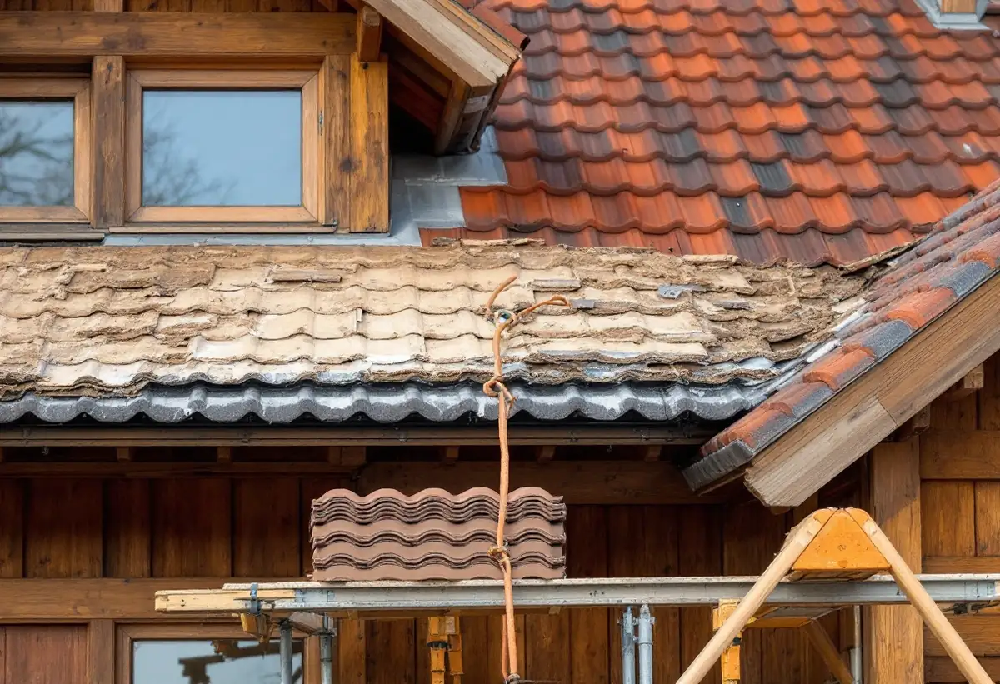
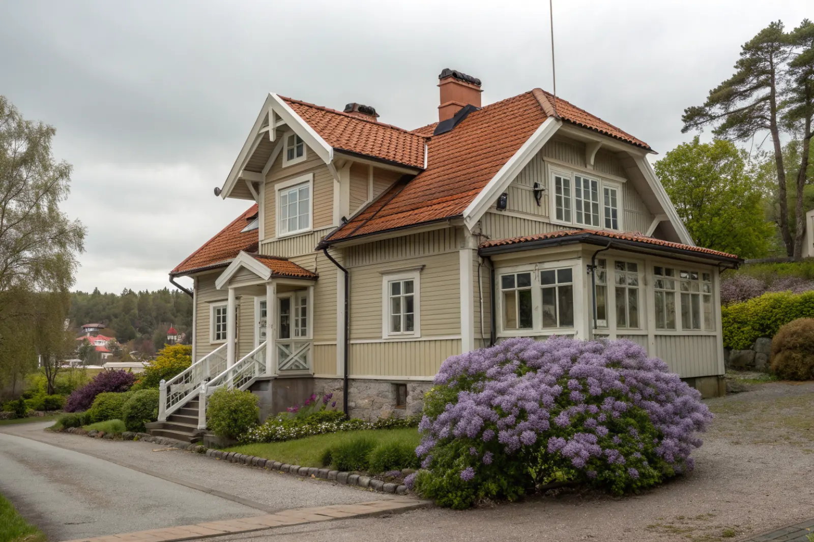
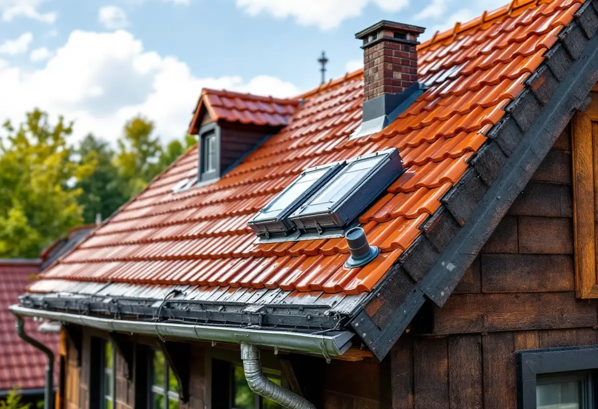

Takbyte i Älvsjö
Byte av tegel-, betong- och plåttak.
Takbyte i Älvsjö →Älvsjö i söderort har några av Stockholms mest omfattande småhusområden.
Skicka gärna en bild på taket.
Något blev fel. Kontrollera uppgifterna eller ring 08 12 410 276.

Vi är takläggare i Älvsjö för villor i bland annat Långbro, Herrängen, Solberga, Liseberg och Örby.
Villabebyggelsen i Älvsjö växte fram längs järnvägen i början av 1900-talet. Långbro och Herrängen har många hus från 1910–40-talet – trävillor och putsade villor med branta tak, verandor och ofta originalteglet kvar.
Solberga och Örby har fler egnahem och småhus från 1930–50-talet, ofta med enklare sadeltak i betongpannor eller tegel. Liseberg har både äldre villor och radhus.
De stora trädgårdarna i Långbro och Herrängen ger skugga och löv, och många hus har byggts ut med kupor och vindsinredning. Vi bedömer hela taket – även de delar som tillkommit senare.
Oavsett om du behöver ett komplett takbyte eller en riktad renovering ger vi en tydlig bedömning och offert. Vi arbetar även i grannområden – se alla områden vi arbetar i.


På hus från 1910–30-talet har taket ofta redan lagts om en gång, ibland med bitumenpapp som nu är spröd. Fuktfläckar i vindsbjälklaget, rostiga spikar i läkten och vatten som rinner längs skorstenen är typiska tecken. Verandor och burspråk har ofta egna små tak med plåt som behöver ny falsning.
Egnahemmen från 1940–50-talet har ofta betongpannor som börjat vittra. Ytan blir porös, pannorna suger vatten och mossan får fäste – särskilt på norrsidan under träden.
Älvsjö hör till Stockholms stad, och bygglov hanteras av stadsbyggnadskontoret. Sedan 1 december 2025 behövs normalt inget lov för att byta takmaterial eller kulör på en villa. I de äldre villaområdena kan detaljplanen ha skyddsbestämmelser som gör att lov ändå krävs – kolla det innan du väljer nytt material.
Gatorna i villaområdena är ofta smala med parkering längs kanten. Vi planerar container och leveranser så att grannarna kan ta sig fram under hela arbetet.
Originaltegel i Långbro och Herrängen och små takytor på verandor och burspråk – läs mer under takrenovering i Älvsjö.
Byte av tegel-, betong- och plåttak.
Takbyte i Älvsjö →Riktade åtgärder som förlänger takets liv.
Takrenovering i Älvsjö →Bedömning av skick inför beslut.
Takbesiktning i Älvsjö →Nytt ytskydd på plåttak.
Takmålning i Älvsjö →Skonsam tvätt och mossbehandling.
Taktvätt i Älvsjö →Nytt plåttak och plåtarbeten.
Plåttak i Älvsjö →Vi utgår från Bromma och når Älvsjö via E4:an söderut. Vi bokar in besiktning och följer projektet på plats.
Läs mer om tak på villa eller jämför takbyte och takrenovering innan du bestämmer dig.
Vi arbetar även i Hägersten.
Takläggare i Hägersten →Vi arbetar även i Enskede.
Takläggare i Enskede →Vi arbetar även i Huddinge.
Takläggare i Huddinge →Vi arbetar även i Farsta.
Takläggare i Farsta →Eller ring 08 12 410 276, mån–fre 08–17.
Skicka gärna en bild på taket.
Något blev fel. Kontrollera uppgifterna eller ring 08 12 410 276.